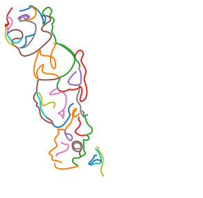
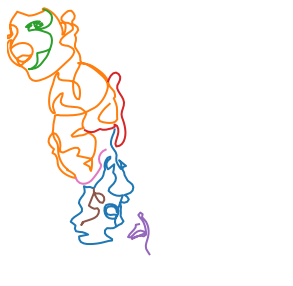
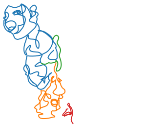
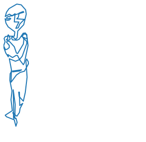
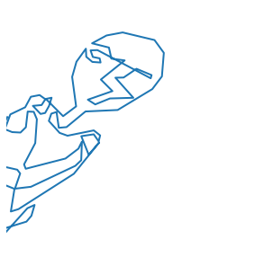

from singleline_dataset.transforms import *
from singleline_dataset.svg_files import *
from singleline_dataset.strokes import *
from singleline_dataset.display import *
# maximum number of points when discretizing the paths of the SVG file
total_n = 1000
# minimum number of points in a path, discard any paths with less points
min_n = 10
# process the SVG paths
rescaled_strokes = svg_to_strokes('../data/svg/0008.svg', total_n=total_n, min_n=min_n)
# recursively join up any paths whose start/end points are within a
# distance threshold of any other paths' start/end points
joined_strokes, _ = merge_until(rescaled_strokes, dist_threshold=15.0)
# recursively splice up any paths whose start/end points are within a
# distance threshold ANY POINTS WITHIN another path.
spliced_strokes, _ = splice_until(joined_strokes, dist_threshold=40.0)
# convert the strokes (lists of lists of coordinates)
# to stroke-3 format (list of coordinates + lift_pen field),
# and apply RDP stroke simplification to reduce the number
# of points.
deltas = stroke_rdp_deltas(spliced_strokes, epsilon=0.5)singleline_dataset
Processing Single Line Drawing Data to Train SketchRNN
Install
pip install singleline_datasetUsage
Converting SVG’s to Stroke-3
Plotting each of the various transformations helps to explain what’s happening at each stage of path processing:
plot_strokes(rescaled_strokes)
plot_strokes(joined_strokes)
plot_strokes(spliced_strokes)
plot_strokes(deltas_to_strokes(deltas))Working with Stroke-3 Data
The datasets for SketchRNN are based on Google’s QuickDraw dataset.
Each numpy npz file has a train and valid entry, each of which is an array of stroke-3 data.
# download a dataset
!wget https://storage.googleapis.com/singleline-datasets/v1/epoch-20231214-trainval.npz--2024-03-09 21:50:41-- https://storage.googleapis.com/singleline-datasets/v1/epoch-20231214-trainval.npz
Resolving storage.googleapis.com (storage.googleapis.com)... 2607:f8b0:4006:81e::201b, 2607:f8b0:4006:81d::201b, 2607:f8b0:4006:824::201b, ...
Connecting to storage.googleapis.com (storage.googleapis.com)|2607:f8b0:4006:81e::201b|:443... connected.
HTTP request sent, awaiting response... 200 OK
Length: 16584598 (16M) [application/octet-stream]
Saving to: ‘epoch-20231214-trainval.npz.2’
epoch-20231214-trai 100%[===================>] 15.82M 46.9MB/s in 0.3s
2024-03-09 21:50:42 (46.9 MB/s) - ‘epoch-20231214-trainval.npz.2’ saved [16584598/16584598]
import numpy as np
ds = np.load('epoch-20231214-trainval.npz', encoding='latin1', allow_pickle=True)['train']
print(f"num drawings in dataset: {ds.shape[0]}")
ds[1][:5]num drawings in dataset: 2400array([[0.0, 70.17511113473614, 0.0],
[3.5628420515071895, 10.158300414396564, 0.0],
[3.9570533499574054, 6.056198233013305, 0.0],
[-0.7156819364732456, -3.692830289126249, 0.0],
[7.309693891169843, 4.8343845911431345, 0.0]], dtype=object)Stroke-3 Transformations
It’s helpful to convert back and forth between the formats deltas, points, and strokes.
deltas is what I call stroke-3 formatted data. It’s one list of entries with the following format:
delta_xdelta_ylift_pen(0if pen is down,1if the pen should lift and start a new stroke)
points is like deltas, except with absolute coordinates instead of deltas. This is helpful for understanding the upper/lower x and y boundaries for a drawing.
abs_xabs_ylift_pen
strokes is a list of lists of coordinates. Instead of needing a lift_pen column, each stroke is a separate list of absolute coordinates:
abs_xabs_y
singleline_dataset.transforms provides the following converter functions:
deltas_to_pointspoints_to_strokesdeltas_to_strokesstrokes_to_deltasstrokes_to_pointspoints_to_deltas
from singleline_dataset.transforms import *
points = deltas_to_points(ds[1])
points[:5]array([[0.0, 70.17511113473614, 0.0],
[3.5628420515071895, 80.3334115491327, 0.0],
[7.519895401464595, 86.38960978214601, 0.0],
[6.804213464991349, 82.69677949301976, 0.0],
[14.113907356161192, 87.5311640841629, 0.0]], dtype=object)strokes = deltas_to_strokes(ds[1])
strokes[0][:5]array([[0.0, 70.17511113473614, 0.0],
[3.5628420515071895, 80.3334115491327, 0.0],
[7.519895401464595, 86.38960978214601, 0.0],
[6.804213464991349, 82.69677949301976, 0.0],
[14.113907356161192, 87.5311640841629, 0.0]], dtype=object)There are also helper functions for applying affine transformations to lists of points.
_ = apply_transform(
points[:,:2], # omit the lift_pen field to run affine transforms
scale_xform(sx=2, sy=2).dot(rotate_xform(45))
)There’s a helper class to create a bounding box, given a list of points:
bb = BoundingBox.create(points)
bbBBox((0.0, 0.0), (39.35575901061327, 200.00000000000003)) (width 39.35575901061327 x height 200.00000000000003)bb.area()7871.151802122655_ = apply_transform(
points[:,:2],
# affine transformation to scale the coordinates down to a range between 0 and 1 (preserving aspect ratio)
bb.normalization_xform()
)Displaying Stroke-3 Data
from singleline_dataset.display import *plot_strokes(strokes)
transformed_points = apply_transform(
points[:,:2], # omit the lift_pen field to run affine transforms
translate_xform(tx=100,ty=0).dot(scale_xform(sx=2, sy=2)).dot(rotate_xform(45))
)
# add the lift_pen column back in after applying transformation
transformed_points = np.concatenate([transformed_points, points[:,2].reshape((transformed_points.shape[0], 1))], axis=1)
plot_strokes(points_to_strokes(transformed_points))